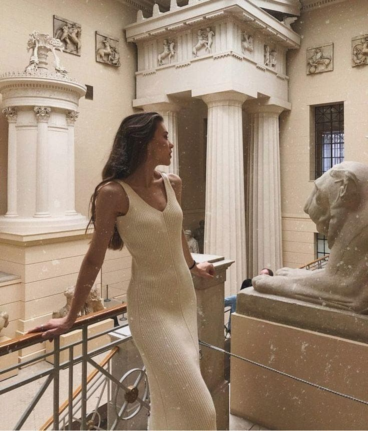
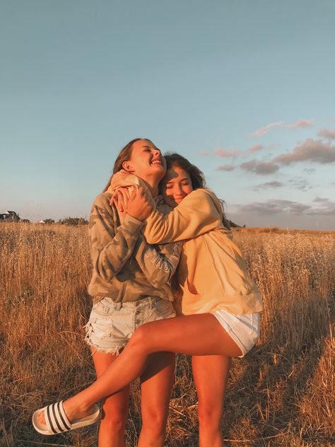

наполегливо рекомендую відвідувати цей сайт для покращення настрою
💜гортай вже, вредіно💜
Научись проходить мимо соблазнов, иначе никогда не
доберешься до цели.
Кожен бачить, якою ти здаєшся, мало хто відчуває, яка ти є
Берегите людей, после встречи с которыми, что-то светлое и
радостное поселяется в вашей душе
— И много человеку нужно для счастья?
— Много! Целого другого человека.
Знаєш у чому сила жінки? Проплакавши годинами в подушку,
вона знайде в собі силу висушити сльози, навести красу, і
вийде зі сліпучою посмішкою, ніби вона найщасливіша у світі,
навіть якщо наполовину мертвa.
— Кузьма Скрябін

Якою б сильною не була жінка, вона чекає чоловіка сильнішого від себе. І не для того, щоб він обмежував їй свободу, а для того, щоб він дав їй право бути слабкою.
— Еріх Марія Ремарк
Найдорожчих нам людей ми носимо постійно з собою.
Подумки.
Всередині.
В серці.

Друг — это прежде всего тот, кто не берётся судить
У каждого есть Свой человек. Кому-то стоит дождаться его, а кому-то — беречь.